Host Networking
What is Host Networking?
Traditionally, the bottleneck of the network is inside the network infrastructure, not at the end hosts. However, in modern high-performance datacenters, as network performance demand continues to increase, the end hosts are struggling to keep up with the demand.
In particular, the CPU running network protocols like TCP is no longer able to deliver the high performance that the datacenter needs. CPUs are expensive, and delivering high performance means that the CPU is spending all its time running network protocols, with fewer resources allocated toward running the actual applications.
Also, the actual protocols that we’ve been running, like IP and TCP, are no longer able to meet modern high performance demands.
To solve these two problems, we turn to host networking, which involves optimizations at the end hosts (as opposed to inside the network).
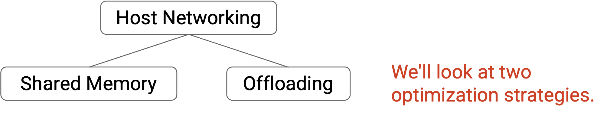
Optimization: Shared Memory in User Space
Recall that at the end host, Layers 1 and 2 are implemented in hardware at the network interface card (NIC). Layers 3 and 4 are implemented in software in the operating system (on the CPU). Layer 7 is the application itself.
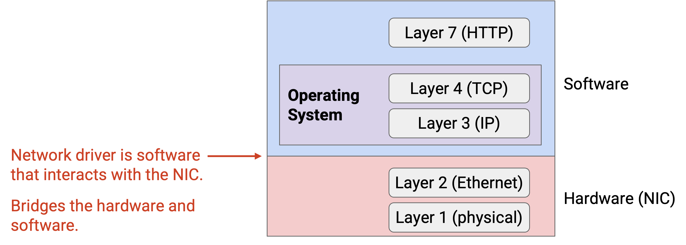
Recall from a prerequisite class (e.g. CS 61C at UC Berkeley) that modern computers are designed with virtual memory, so that each application gets its own dedicated address space, isolated from other applications. In particular, each Layer 7 application gets its own dedicated address space in user space. By contrast, the operating system itself runs in kernel space, which is a special part of memory that applications in user space cannot access.
This memory management model means that when we pass packets down the stack to send data, we are constantly copying data from user space to kernel space. Also, when we pass packets up the stack to receive data, we are constantly copying data from kernel space to user space. Copying bits between kernel space and user space is expensive and kind of pointless.
Another problem with this memory management model is, programming in kernel space is difficult. If we wanted to modify TCP and optimize it for our purposes, we would have to reach into the operating system and program at a very low level. Deployment and testing is harder and slower in the kernel space than in the user space.
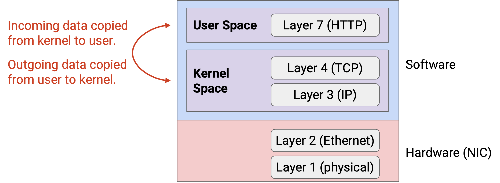
To solve these two problems, we can move the networking stack (e.g. Layer 3 and 4 protocols) out of kernel space, and into user space. Now, Layers 3, 4, and 7 can all access a shared address space, and no copying back-and-forth is needed. Also, iterating and innovating in user space is now easier.
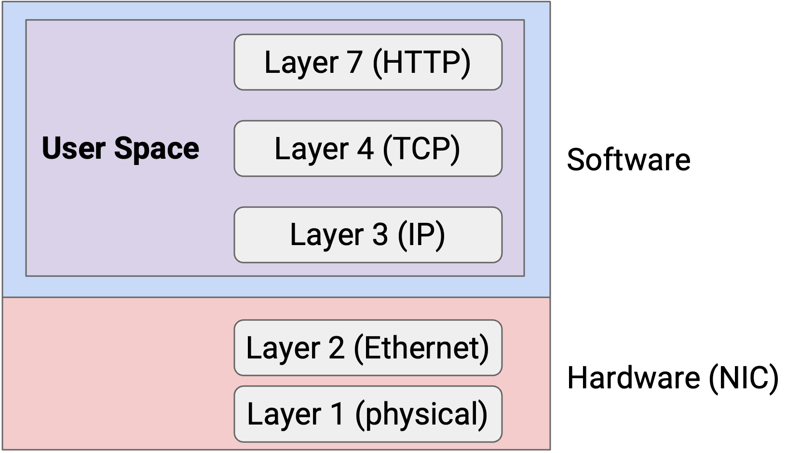
Using shared memory in user space helps us eliminate some extraneous work like copying back-and-forth, but it still isn’t enough to make our hosts meet modern performance requirements.
Optimization: Offloading to NIC
CPUs are not fast enough to run network protocols (e.g. IP, TCP) at modern performance speeds. Also, using CPUs to run network protocols leaves less CPU resources for the applications themselves to use.
To solve this problem, we can offload the networking stack out of the CPU (software), and into the NIC (hardware).
The NIC is a natural place for offloading operations. Every packet has to pass through the NIC, so the NIC can do some extra processing and save the CPU from doing that work.
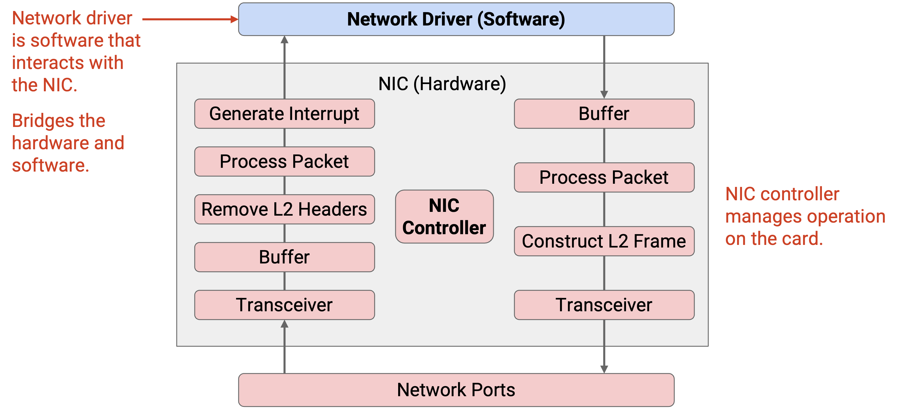
The network driver is a piece of software in the OS that programs and manages the NIC. The driver provides an API that allows higher-level programs in the OS to interact with the NIC. You can think of the driver as the bridge between hardware and software.
What are the benefits of offloading? It frees up CPU resources for the application to use. Also, specialized processing in hardware can be more efficient than processing on general-purpose CPUs. Here, efficiency refers to both speed and power consumption. Finally, running operations in hardware gives us not just lower latency, but also more predictable and consistent latencies. When running applications in software, the CPU has to schedule different processes, which can add unpredictable delay. (For example, if I have a packet to process, the CPU might have to finish its current job before switching over to processing my packet.)
Brief History of Offloading: Epoch 0
Offloading operations from the OS (software) to the NIC (hardware) is an active, ongoing area of research. There have been three epochs of development, where increasingly complicated operations have been offloaded to the NIC.
Epoch 0: Before any offloading, let’s see what the NIC does in the standard networking stack we’ve seen so far.
The NIC has a central controller processor that manages operation on the card.
For incoming packets, the transceiver converts electrical signals into digital signals (1s and 0s) and puts those bits in a buffer. Then, the NIC reads bits from the buffer, parses them as Ethernet frames, processes the frame (e.g. verifies checksum), and removes the Layer 2 header. Finally, the NIC generates an interrupt to tell the CPU to stop what it’s doing and collect the resulting Layer 3 packet for further processing.
For outgoing packets, packets from the network driver are placed in a buffer. The NIC reads bits from the buffer and processes them to construct Ethernet frames. Then, the frame is passed to a transceiver, which converts the digital bits to electrical signals.
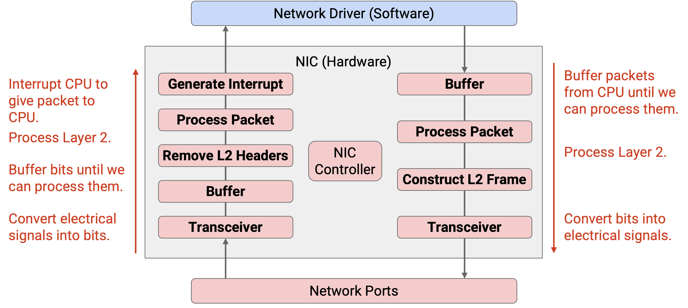
In the standard networking stack, you can think of the NIC as a doormat that passes incoming packets to the OS, and sends outgoing packets for the OS, but performs very minimal processing on those packets.
Brief History of Offloading: Epoch 1
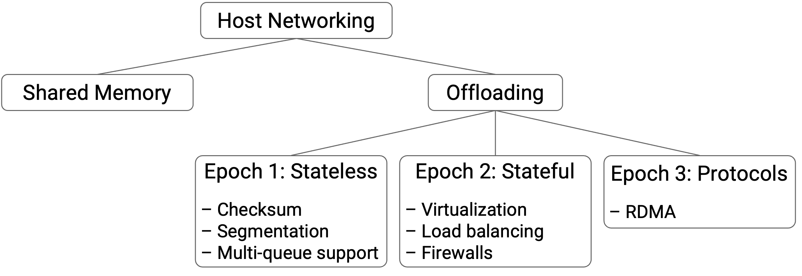
The first operations that we tried to offload to the NIC are simple, stateless operations. These stateless operations can be done independently per packet, and the NIC doesn’t have to remember any state across multiple packets.
One stateless operation we can offload is checksum computations, not just at Layer 2, but also at Layers 3 and 4. The NIC can validate these checksums (for incoming packets) and compute these checksums (for outgoing packets), so that the CPU doesn’t have to.
Another stateless operation we can offload is segmentation. In our standard model, if the application has a huge file to send, then the OS is responsible for splitting up the file into smaller packets. Then, at the recipient, the OS is responsible for reassembling those packets. As an optimization, we can make the NIC deal with splitting up and reassembling packets. Now, the OS no longer has to deal with a ton of small packets, and can instead deal with a few large packets, which is more efficient (e.g. fewer headers to process).
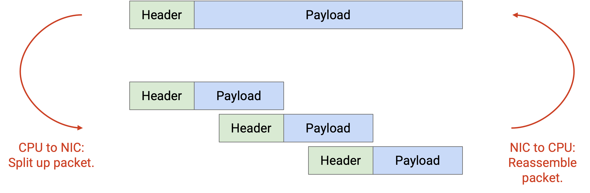
With segmentation, there’s a trade-off between smooth connections and CPU efficiency. If the application hands large packets to the NIC, the CPU has less work to do. However, the NIC now gets large bursts of data, and the connection is more bursty. By contrast, if the application hands smaller packets to the NIC, the CPU has more work to do, but the NIC gets a steadier stream of data, and the resulting connection is smoother.
There are some challenges associated with aggregating small packets. What if an intermediate packet is lost? Then the NIC might have to pass up a bunch of small packets, and is unable to combine them into one big packet. What if some packets have a flag (e.g. ECN for congestion) set, and others don’t? Should the resulting aggregated packet have the flag set or not?
The third stateless operation we’ll look at offloading is multi-queue support. In our standard model, the NIC has one queue for outgoing packets, and one queue for incoming packets, and all applications share these queues. The network driver (in software) was responsible for load balancing, in case multiple applications or multiple CPUs were sending and receiving data.
We can instead offload this load balancing job to the NIC. Now, the NIC has multiple transmit queues, and multiple receive queues. For example, in a multi-processor system, each CPU can have its own dedicated transmit/receive queues. The NIC maintains all the queues in parallel, ensuring isolation and load-balancing between the different CPUs. The NIC can also prioritize certain queues over others.
Even though the NIC has multiple queues, it ultimately still has to send out all the packets along one wire. Therefore, the NIC needs some packet scheduler to decide which queue to send from next. The scheduler can be programmed to achieve the desired load-balancing behavior (e.g. if we want to prioritize one queue over another).
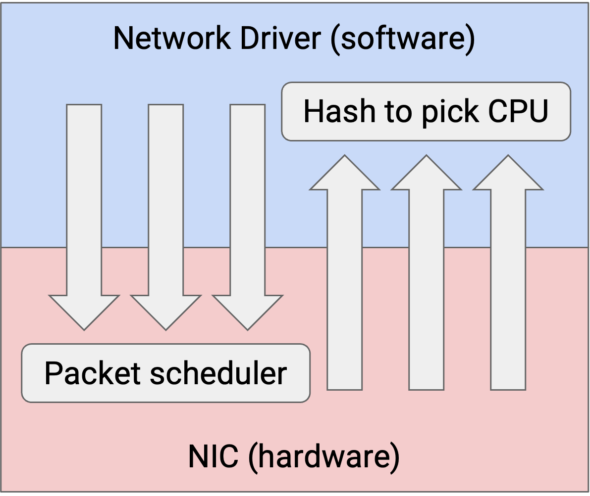
One challenge with multiple queues is mapping packets to queues. When a CPU has some data to send, which queue does it use? In particular, we want to make sure that all the packets within a single flow end up in the same queue (and not spread out across many queues). This helps us ensure that packets in a flow are sent in-order. Recall that in TCP, sending packets out-of-order works, but is bad for performance (e.g. receiver has to buffer out-of-order packets).
When processing incoming packets from the various receive queues, the NIC can hash the packet to decide which CPU will handle that incoming packet. Then, the NIC interrupts that CPU and tells it to process the packet. The hash-based behavior is similar to ECMP (Equal-Cost Multi-Path Routing), and helps us ensure that all packets in the same flow are processed in order by the same CPU.
Brief History of Offloading: Epoch 2
Later, we started to offload more complicated, stateful operations to the NIC.
The development of Epoch 2 has been driven by virtualization in datacenters, where multiple virtual machines run on the same physical server. For example, in virtualization, we needed a virtual switch to forward incoming packets to the appropriate VM. We showed the virtual switch running in software, but the virtual switch could also be implemented in hardware.
Firewalls and bandwidth management are another example of a stateful offload. In software, we can implement a firewall that enforces security policies (e.g. drop all incoming packets from this malicious IP). We can also enforce policies to manage bandwidth between users (e.g. User A can only send 100 packets per minute, any excess is dropped). These security policies could be checked by hardware instead.
To implement these stateful operations, we can use a match-action pair table, similar to the OpenFlow tables (from the SDN section). This API allows the software to program different policies onto the hardware, so that the hardware can process packets according to those policies. As we saw earlier, the match could be against a 5-tuple or some other header fields. The actions could be dropping packets, forwarding packets to a specific next-hop, or modifying headers.
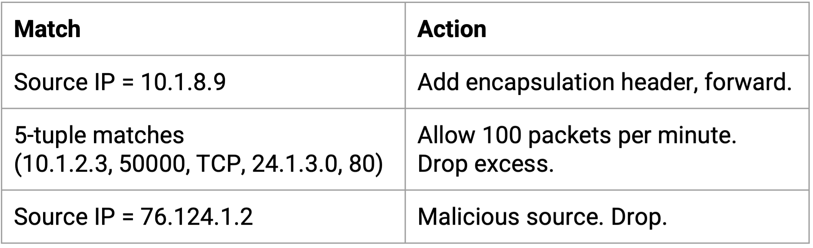
Brief History of Offloading: Epoch 3
This is the current era of offloading. There are ongoing efforts to offload entire protocols, like TCP, out of the OS and onto the NIC. This epoch is being driven by even higher performance demands, especially with applications like AI/ML (artificial intelligence, machine learning) with high performance requirements.
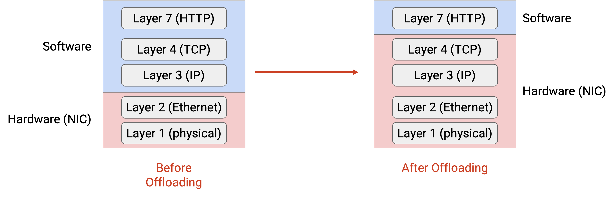
Ideally, we’d like to let the application directly hand data to hardware, and let the hardware perform all the necessary network processing at Layers 4, 3, 2, and 1. The OS is entirely out of the picture, and all the network protocols are implemented directly in hardware.
While there’s been some experimentation with offloading standard networking protocols like TCP onto the NIC, they haven’t been deployed at scale. Instead, we’ve designed new networking protocols like RDMA, which are specially designed to allow implementation directly in hardware.
RDMA: Remote Direct Memory Access
RDMA offers an abstraction where Server A can directly access the memory in Server B, without the involvement of the OS or the CPU in either server. RDMA can be implemented directly in hardware, replacing the standard TCP/IP software networking stack.
Suppose that Server A wants to send a 10 GB file to Server B. In the standard networking stack, the CPU reads the file from memory, processes it (e.g. TCP/IP), and passes the resulting packets to the NIC. At the recipient, the NIC passes the packets to the CPU, which processes the packets, and writes the resulting file payload into memory. Notice that the CPU is involved in processing every single packet of the 10 GB file.
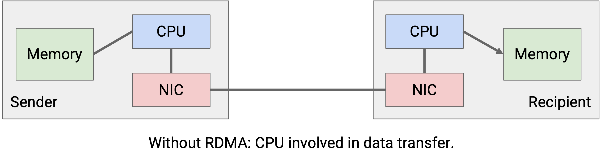
In the RDMA abstraction, the NIC reads the file from memory and sends it out, with no CPU involvement. At the recipient, the NIC processes the incoming bytes and writes them to memory, again with no CPU involvement. Note that the CPU is still needed at the beginning to set up the transfer, and at the end to complete the transfer. But the bulk of the 10 GB file transfer is done without the CPU.
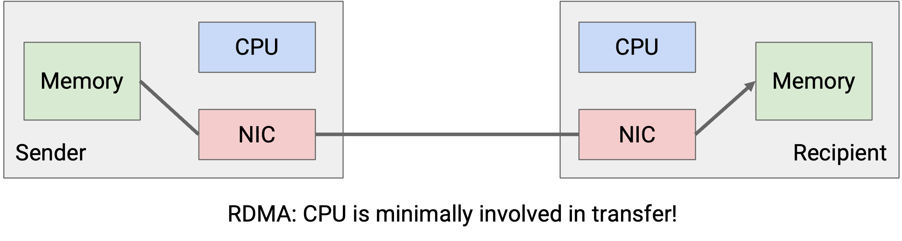
To use RDMA, programmers no longer use the socket abstraction. Instead, the main abstraction we use is the queue pair. The send work queue has all of the pending jobs where data needs to be transferred from me to somebody else. The receive work queue has all of the pending jobs where I need to receive data from somebody else. A single NIC can have multiple queue pairs, where each offers different service to the programmer. For example, one pair might offer reliable, in-order delivery, while another pair might offer unreliable delivery. A queue pair configured to be reliable and in-order is the closest to a traditional TCP connection.
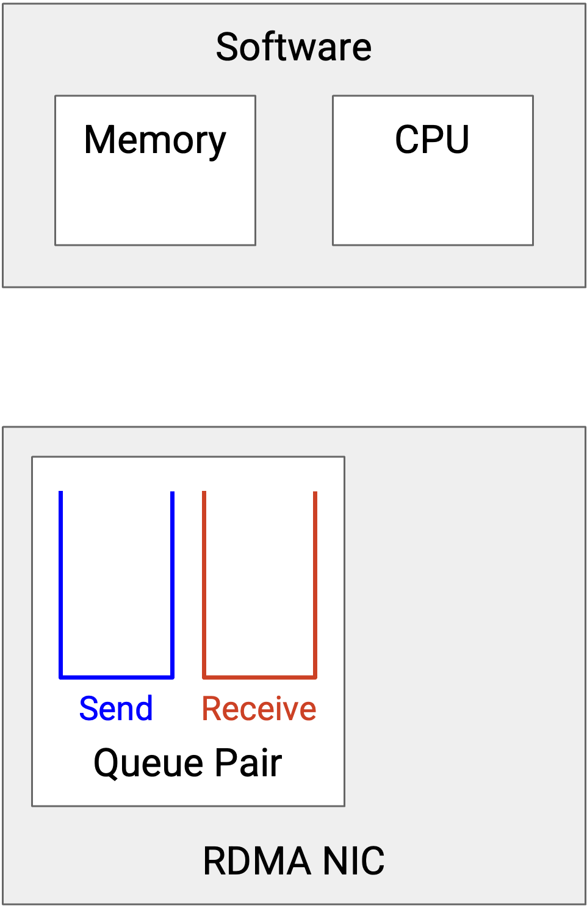
Each element in the queue is called a work queue element (WQE). A WQE lets the application describe what work needs to be done. In English, the WQE in the receive queue might say, “Take 100 MB starting from address 0xffff1234 on the remote server, and write them to address 0xffff7890 in my local memory.” In code, the WQE is a struct that contains these instructions, e.g. a pointer to where we’re writing the received data.
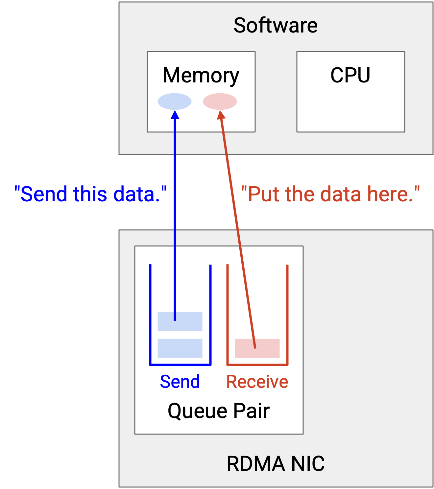
Notice that the WQE abstraction gives the RDMA protocol a higher-level view of the application. In the TCP/IP stack, the network just sees a bytestream, but in RDMA, the WQE allows the application to describe the job in more detail (e.g. specifying the start and end of a block of data being transferred).
When a job is finished, the WQE is removed from the queue, and the NIC creates a new struct called a Completion Queue Element (CQE), describing what happened to the job (e.g. success or failure). This CQE is stored in the Completion Queue, and sits there waiting until the application is ready to read the CQE and understand what happened to the job.
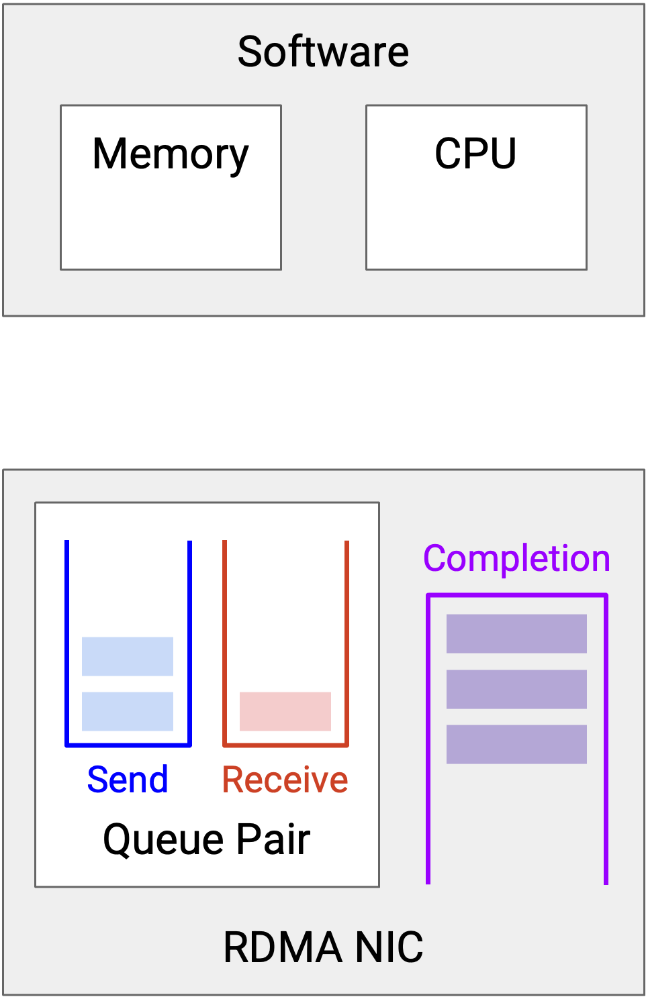
Notice that RDMA is asynchronous. Applications can add jobs (WQEs) to the queue pairs whenever they want, and the NIC will process the jobs in order. Similarly, when the job is done, a CQE is placed in the completion queue, and the application can read the CQE whenever it wants. (Contrast this with the TCP/IP stack, where incoming data triggers an interrupt for the CPU to handle that data.)
RDMA Example
RDMA can be used for several different operations between servers. Each operation has its own performance specifications (e.g. different latencies), and different semantics (e.g. different error messages). As an example, let’s look at an RDMA send operation, where Server A reads a file from its memory, transfers that data, and Server B writes that file into its memory.
-
Each server designates some section of its memory to be accessible by the NIC for RDMA transfers. Server A designates the memory corresponding to the file as NIC-readable. Server B designates a blank buffer where it will receive the file as NIC-readable.
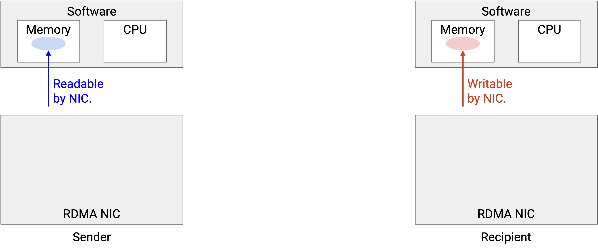
-
Each server sets up queues. Both NICs now have a send queue, a receive queue, and a completion queue. Note that this step can be done out-of-band, using a traditional protocol like TCP to coordinate between the two servers.
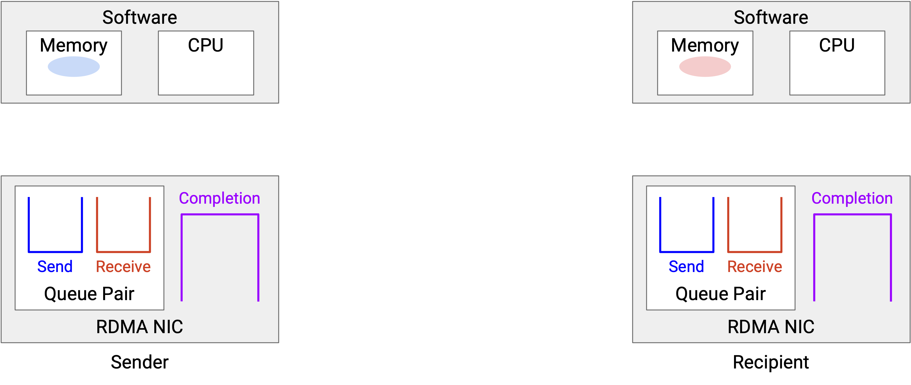
-
Server A creates a WQE in the send queue. This WQE contains a pointer to the file, indicating the data to be sent. On the other side, Server B creates a WQE in the receive queue. This WQE contains a pointer to the blank buffer, indicating where the received data should be written.
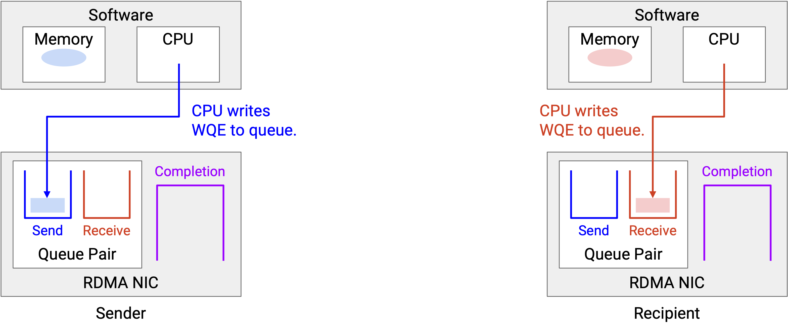
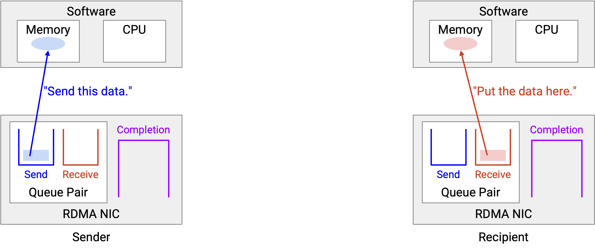
-
Once the transfer is queued on both sides, the data transfer can occur, with no involvement from software. The NIC handles everything, including reliability, congestion control, and so on.
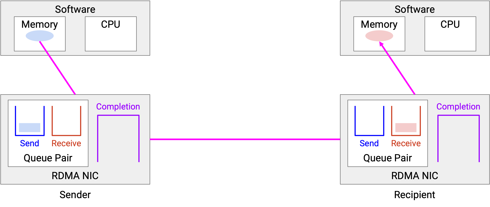
-
When the transfer is done, the WQEs are removed from the queues. Both NICs generate a CQE, indicating that the transfer is done, and including any relevant status messages (e.g. error messages). Server A’s CQE indicates that the data was successfully sent, and Server B’s CQE indicates that the data was successfully received.
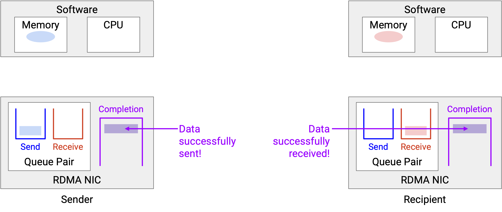
-
Eventually, the applications read the CQE to understand what happened to the transfer.
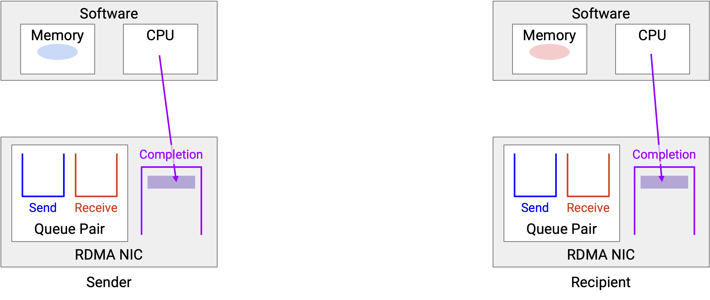
RDMA Pros, Cons, Applications
RDMA gives us high-performance data transfer (low latency, high bandwidth), and frees up the CPU for applications. However, RDMA doesn’t come for free. RDMA requires specialized hardware and software, and is generally more complex than the traditional networking stack. Remember, RDMA is replacing the TCP/IP stack, so it has to implement all the TCP/IP functionality like reliabilty and congestion control, all directly in hardware.
RDMA also has some limitations, and usually works best in datacenters where the two servers are physically near each other. If the two servers are far away, the dominant delay comes from sending data across the network, and the time savings from RDMA are negligible. By contrast, if the two servers are nearby, the host processing packets could be the dominant delay, so RDMA gives significant time savings.
RDMA has been applied in many different settings that require high-performance, low-latency computing. Examples include scientific research, financial modeling, weather forecasting, machine learning, and search queries. In cloud computing, RDMA can be used to migrate a large VM from one physical server to another, freeing up the CPU for customers to use. In AI/ML training, RDMA not only frees up the CPU and gives us low latency, but it also gives us predictable latency, which is important when different servers need to coordinate to train AI/ML models.
Implementing RDMA
Remember, RDMA replaces the TCP/IP networking stack, so RDMA is responsible for reliability, congestion control, and so on. There are two broad philosophies for how to implement this.
One option is to implement these features in the network itself, e.g. reliability at the switches. This is the idea behind Nvidia’s InfiniBand.
Another option is to implement these features in the NIC, underneath the queue-pair abstraction. This is the idea currently being pursued at Google.
In both cases, the application and the OS in software gets the illusion of reliable, in-order delivery via the queue pair abstraction. The difference here is how RDMA actually implements those service guarantees.